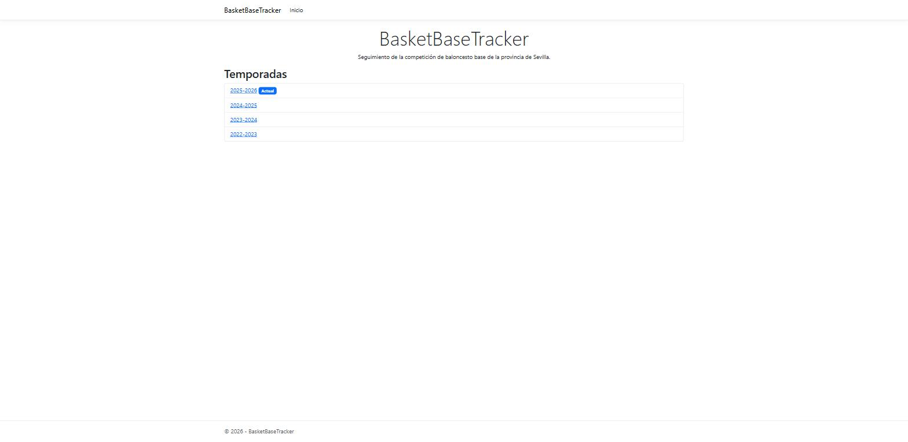
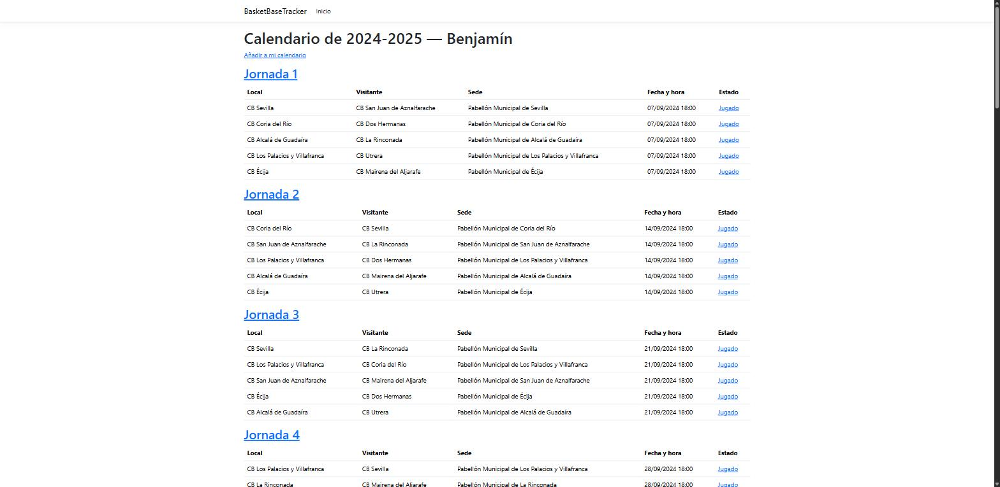
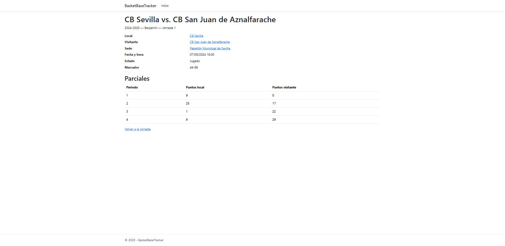
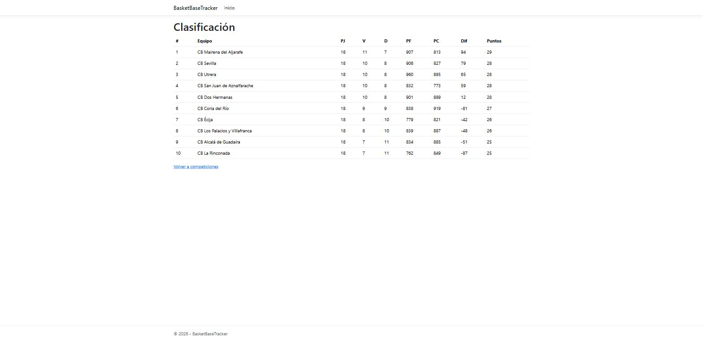

Seguimiento de la competición de baloncesto base de la provincia de Sevilla
Eduardo Arroyo — 2026
docs/functional.md — Recursos de desarrollo
~25 pantallas — docs/screens.md




flowchart LR
Usuario -->|HTTPS| CF[Cloudflare
CDN + WAF + rate limiting]
CF --> CA[Azure Container Apps
BasketBaseTracker.Web]
CA --> SQL[(Azure SQL Database
Serverless, auto-pause)]
CA --> KV[Azure Key Vault
secretos]
CA --> AI[Application Insights
OpenTelemetry]
GH[GitHub Actions] -->|build + test + deploy| CA
.NET 10 · ASP.NET Core Razor Pages · EF Core · .NET Aspire (IaC) · un único lenguaje de extremo a extremo
Cada decisión documentada con su alternativa descartada en docs/architecture.md
Cada incremento (BAS-N) es una conversación estructurada con el asistente de IA, no una única generación de código.
18 incrementos completados hasta la fecha — este mismo documento es BAS-19.
docs/workflow.md
Plan inicial: Managed Identity para que Web accediera a Azure SQL, según architecture.md.
Incidente real: el script que Aspire genera para dar de alta esa identidad fallaba de forma determinista (bug conocido de la plataforma, conflicto de versiones en el módulo de PowerShell de SQL Server).
Resuelto: se revirtió a autenticación SQL con un login de aplicación de privilegios mínimos, documentando la causa raíz y la alternativa descartada directamente en architecture.md y en el propio spec.md de BAS-3.
El valor del proceso no es "generar código que compila", es descubrir y documentar por qué un plan cambia
feature/BAS-N por incremento, creada desde developmain y develop protegidas: sin push directo, PR obligatorio, CI en verdeCLAUDE.md — reglas de trabajo obligatorias
Unitarios
lógica de dominio pura (clasificación, validaciones de negocio) — segundos
Integración
Razor Pages + EF Core contra base de datos real, vía Aspire.Hosting.Testing
E2E
smoke test con Playwright, solo antes de desplegar a producción
Sin mocks de infraestructura: o lógica pura, o dependencias reales — docs/architecture.md, punto 15
BAS-N completados y archivadosgithub.com/eduarroyo/basket